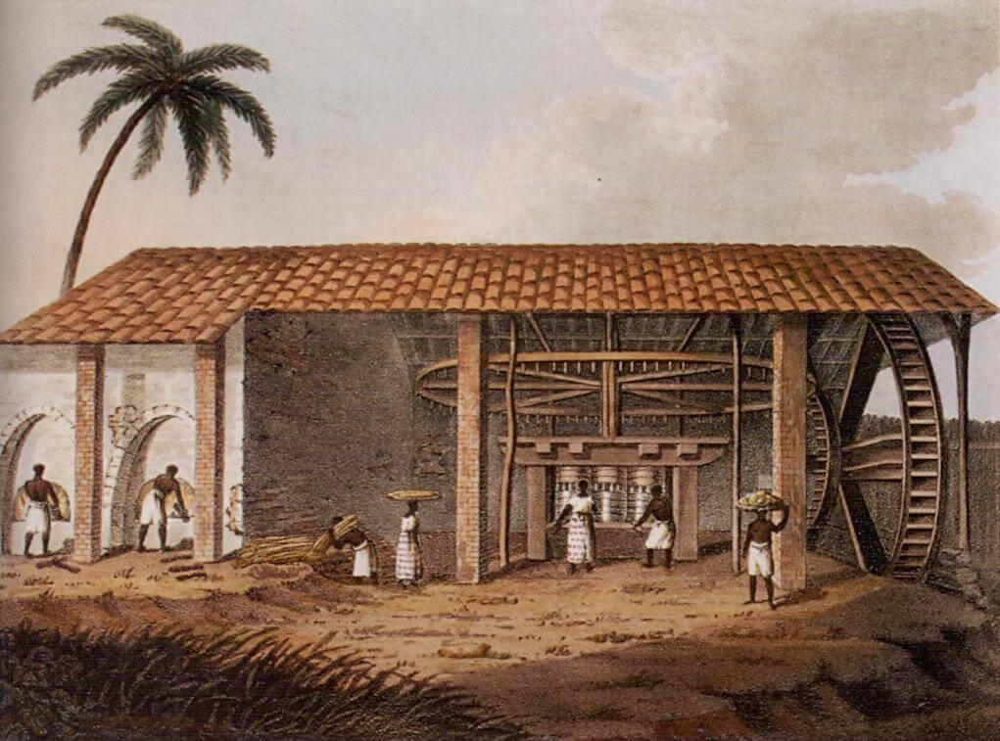

O Brasil se revela em camadas — da cadência do samba às florestas da Amazônia, das grandes cidades às comunidades que preservam tradições antigas.
Sua identidade nasce do encontro entre povos indígenas, influências africanas e heranças europeias, formando uma cultura diversa, marcada por contrastes, ritmos e uma presença viva no dia a dia.
Deslize e conheça mais sobre o país.
Antes da chegada dos europeus, o território brasileiro já era habitado por milhões de indígenas, organizados em diversas culturas e línguas. Em 1500, a expedição portuguesa liderada por Pedro Álvares Cabral marcou o início de um processo de colonização voltado à exploração de recursos naturais.
Ao longo dos séculos, o Brasil tornou-se uma das maiores economias coloniais do mundo, sustentada principalmente pelo trabalho escravizado de africanos. Esse período deixou marcas profundas na formação social e cultural do país, visíveis até hoje.

A independência foi proclamada em 1822, liderada por Dom Pedro I, mas o país manteve a estrutura monárquica por décadas. Somente em 1889 o Brasil tornou-se uma república, iniciando uma nova fase política.
O século XX foi marcado por ciclos de instabilidade, incluindo períodos autoritários e redemocratização. Hoje, o Brasil é uma república democrática que carrega, em sua história, tanto tensões quanto reinvenções.